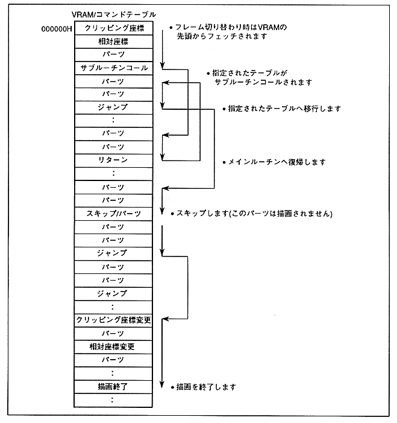

The jump format to the command table to be processed next can be specified for other commands except the drawing end command. The jump formats are as follows.
- Jump to command table
- Skip command table
- Command table group (subroutine) call
- Return (to main routine)
Example of command flow in jump format is as follows.
Figure 3.1 Command table flow
